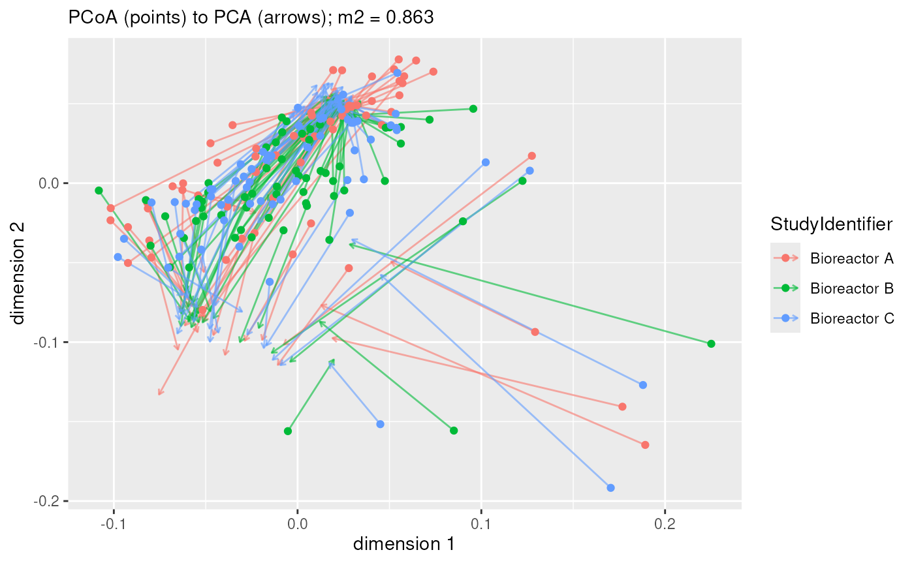

Plot two ordinations superimposed by Procrustes rotation
Source:R/AllGenerics.R, R/plotProcrustes.R
plotProcrustes.RdplotProcrustes() rotates a second ordination of the same samples
onto the first and draws both, with a segment from each sample in the
first to the same sample in the second. Short segments mean the two
ordinations agree.
Usage
plotProcrustes(x, ...)
# S4 method for class 'SummarizedExperiment'
plotProcrustes(x, dimred, dimred2, ncomponents = 2, colour.by = NULL, ...)
# S4 method for class 'MultiAssayExperiment'
plotProcrustes(
x,
experiment,
experiment2,
dimred,
dimred2 = dimred,
ncomponents = 2,
colour.by = NULL,
...
)Arguments
- x
a
SingleCellExperimentobject, such as aTreeSummarizedExperiment, or aMultiAssayExperiment.- ...
additional arguments passed to
geom_point.- dimred
Character scalar. Specifies the firstreducedDim.- dimred2
Character scalar. Specifies the secondreducedDim, ofxor ofexperiment2. For aMultiAssayExperiment, it defaults todimred.- ncomponents
Numeric scalarorvector. The components of each ordination used in the rotation: the firstncomponents, or the components given by index or name. The first two are drawn. (Default:2)- colour.by
Character scalar. Specifies the column fromcolData(x)that colours the points. (Default:NULL)- experiment, experiment2
Character scalar. For aMultiAssayExperiment, the experiments holdingdimredanddimred2. Samples are matched by their primary names.
Details
Both ordinations are centred and scaled to unit sum of squares, and the second is rotated to the first (symmetric Procrustes analysis). The subtitle gives the Procrustes statistic \(m^2\), the sum of squared distances between matched samples, from 0 (same configuration) to 1.
References
Peres-Neto PR, Jackson DA (2001). How well do multivariate data sets match? The advantages of a Procrustean superimposition approach over the Mantel test. Oecologia 129(2):169-178.
Examples
# PCoA of Bray-Curtis against PCA of clr abundances
data("minimalgut", package = "miaTime")
tse <- mia::transformAssay(minimalgut, method = "relabundance")
tse <- mia::transformAssay(tse, method = "clr", pseudocount = 1,
assay.type = "counts")
tse <- mia::addMDS(tse, assay.type = "relabundance", method = "bray",
name = "PCoA")
tse <- scater::runPCA(tse, assay.type = "clr", ncomponents = 5,
name = "PCA")
plotProcrustes(tse, dimred = "PCoA", dimred2 = "PCA",
colour.by = "StudyIdentifier")
